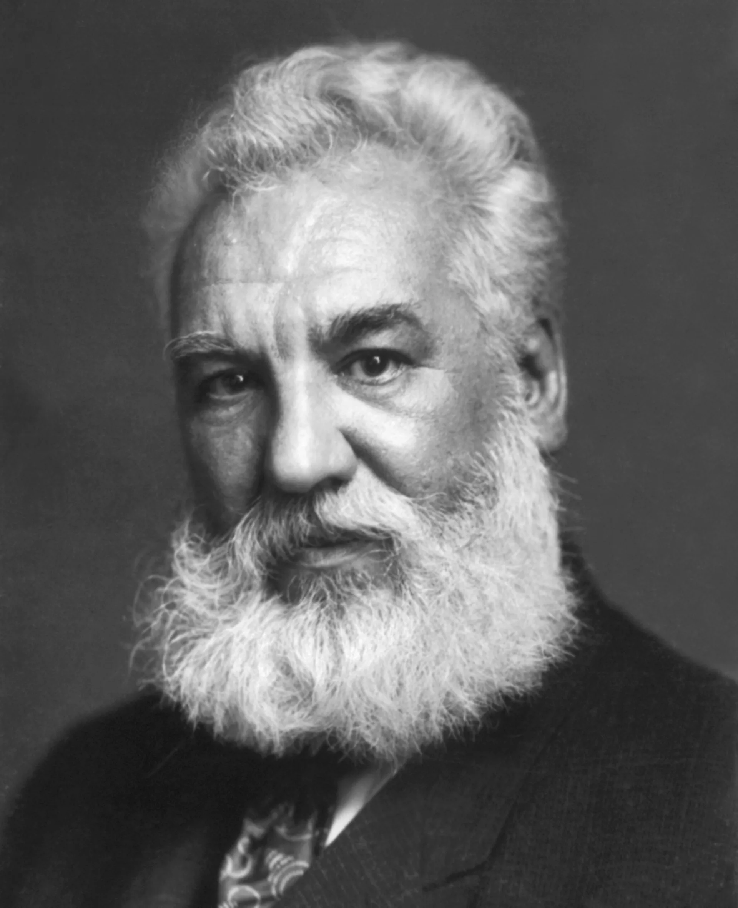
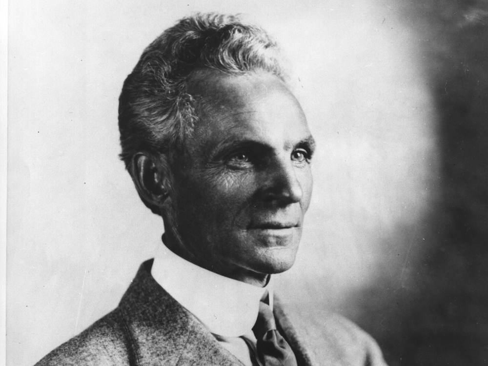
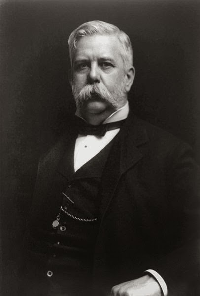

Influencias
Thomas Edison tuvo una tremenda influencia en el campo de la innovación y la tecnología, y su trabajo inspiró a numerosos inventores y científicos prominentes.Nikola Tesla
Trabajó en la compañía de Edison durante un tiempo y fue influenciado por su enfoque en la corriente continua. Sin embargo, su relación se volvió tensa debido a diferencias en la visión tecnológica, y Tesla eventualmente desarrolló la corriente alterna (AC), que fue una competencia directa para el sistema de distribución de corriente continua (DC) de Edison.
Alexander Graham Bell
Aunque Edison y Bell estaban en competencia en el campo de las comunicaciones, ambos inventores se influenciaron mutuamente. Bell admiraba el trabajo de Edison en el fonógrafo y utilizó algunos de sus principios en el desarrollo del teléfono.

Henry Ford
Ford estaba inspirado por el enfoque pragmático de Edison hacia la innovación y la aplicación práctica. Se dice que Ford consideraba a Edison como su mentor y amigo, y su filosofía de producción en masa en la industria automotriz reflejaba el enfoque de Edison en la producción y la eficiencia.

George Westinghouse
Westinghouse fue un importante rival de Edison en la Guerra de las Corrientes. Westinghouse se basó en los principios de corriente alterna de Tesla y demostró la viabilidad y las ventajas del sistema de distribución de AC frente al sistema de DC de Edison.

El enfoque de Thomas Edison en la innovación práctica y su visión empresarial influyeron en numerosos avances tecnológicos y en la mentalidad de muchos inventores y emprendedores de la época y posteriores.